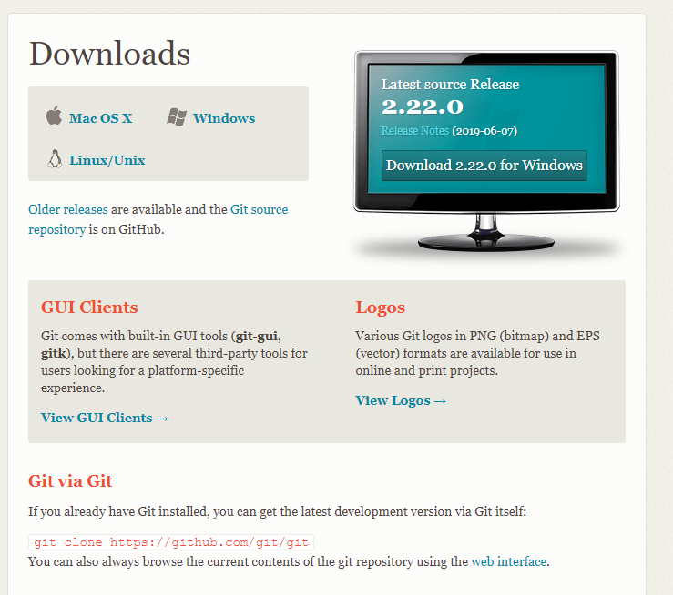
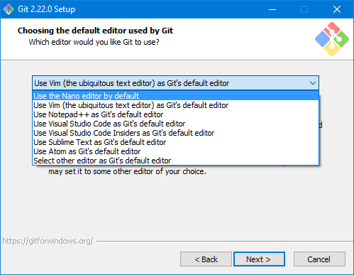
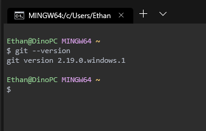

Setting up Git!
How to set up Git on your machine. 💻
7 August 2019
Git
Useful Links 🙌
Download Git: https://git-scm.com/downloads
Git Documentation: https://git-scm.com/doc
Download Git
Fist navigate to the download section of the official Git site Here.
Then select the download for your operating system of choice. As I am using windows that is the option that I will be selecting.
Install
Now that the Git installer has been downloaded, run the installer on your machine.
Follow the setup until you reach the option to select which editor you want to use. For this option its up to you, I personaly prefer nano but you can use what you want.
For the rest of the options you can just leave them on the defaults as that should be fine for most people and then press install.
Your Done! 😎
Now open your terminal of choice and run the command "git --version" to check if git is installed correctly.
Now you can start using Git!
Its also worth noting that by installing Git you will now also have access to git-bash on your computer if you are on windows, allowing the user to have a terminal that is more inline with what you might find on Linux and MacOS.